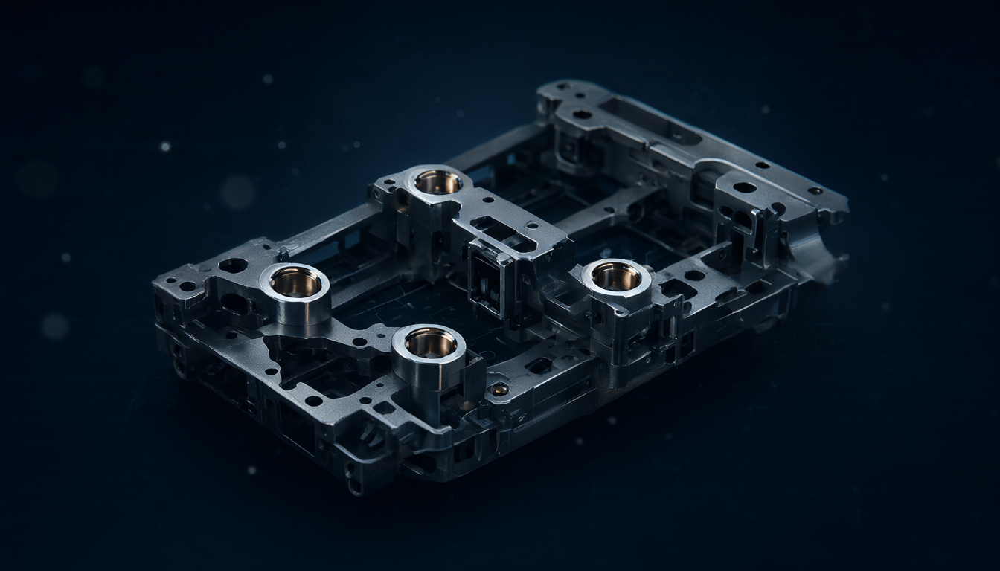

Pi：把核心拆到最小
如果說 Cline CLI 是「把六個零件全部做滿」的一端，Pi 就是另一端：極簡核心 ＋ 高度可擴展的終端 coding agent harness。

它幾乎就是第 3 章那份骨架
Pi 是一個輕量、透明、可嵌入、可自我擴展的 agent harness；它把「agent 該怎麼做」的很多決定交還給使用者。
它不是單純 chatbot，也不是全托管產品。核心具備讀檔、寫檔、編輯、執行 bash 等工具，能完成真實的 coding 任務；但 sub-agents、plan mode、複雜權限彈窗等，傳統上不是核心必備，而是透過 extension、skills 或外部流程補上。
以 Huntley 的標準看，它比 Cline 更接近「可研究、可改造的 harness」，但開箱即用的工程保障也相應較少。
這裡有一個很值得停下來的巧合：Pi 的預設原子工具是 read、write、edit、bash——和第 3 章寫的那四個工具幾乎一模一樣。
換句話說，Pi 不是「另一種產品」，而是把那份最小迴圈，認真做成一個可以每天使用的工具。這也解釋了它為什麼特別適合拿來研究：你已經自己寫過一次，再看一次就看得懂。
能力盤點：Pi
| 面向 | Pi 的程度 | 說明 |
|---|---|---|
| 基本 coding agent | 高 | 內建 read、write、edit、bash 等原子工具，可讀專案、改檔、跑指令 |
| 模型自由度 | 很高 | 支援 Anthropic、OpenAI、Google、Ollama、OpenRouter 等多 provider，並可在會話中切換模型 |
| 可嵌入性 | 很高 | 有 TypeScript SDK、print／JSON mode、RPC mode，適合放進 CLI、CI 或自己的產品 |
| 可觀察性 | 很高 | 系統 prompt 核心極小、架構模組化，容易研究 context、工具呼叫與 session 狀態 |
| 自我擴展 | 很高 | agent 可閱讀本機文件與範例，撰寫並載入 TypeScript extension，修改工具、UI、provider、context 與壓縮行為 |
| 開箱即用 | 中等 | 預設工具少、部分進階功能需自行配置；適合願意動手的人 |
| 安全治理 | 中等偏低 | 權限與沙箱邊界較依賴使用者配置；直接跑 bash 時尤其要小心 |
把這張表和上一章那張並排，會看到一組很乾淨的對稱：
| Cline CLI | Pi | |
|---|---|---|
| 開箱即用 | 高 | 中等 |
| 可觀察性／可拆解 | 中 | 很高 |
| 預設安全治理 | 高（逐步審批） | 中等偏低（自己配） |
你付出多少「自己動手」，就換到多少「看得懂」。這條線幾乎是所有 harness 的共同取捨。
三者放在同一張表上
| 面向 | Pi | Cline CLI | Claude Code |
|---|---|---|---|
| 設計哲學 | 最小核心，使用者組裝 | 開源、模型自由、功能較完整 | 官方整合、開箱即用、終端體驗最佳化 |
| 預設工具 | 約四個原子工具 | 較完整：檔案、shell、MCP、Plan／Act | 內建工具、sub-agents、teams、plan mode 等 |
| 模型選擇 | 20+ provider、300+ 模型，可中途切換 | 多 provider 與本地模型 | 主要為 Claude 模型最佳化 |
| 擴展深度 | TypeScript extension 可改 agent 行為與 runtime 事件 | MCP、SDK、hooks、tool policies | plugins、hooks、skills、MCP |
| Token 效率 | 核心 prompt 極小，但周邊索引會膨脹（見第 6 章實測） | 中等 | 較重，但功能與引導較完整 |
| 適合誰 | 想研究 harness、自建工作流、控制 token 成本的人 | 想要開源但接近成品體驗的人 | 想要最少設定、追求單一廠商最佳體驗的人 |
注意 Token 效率那一列。Pi 把大部分的 context 預算留給你——這在接本地小模型時是關鍵，因為小模型的 context window 本來就窄。相對地，Claude Code 的「較重」換來的是更完整的引導與更少的設定負擔。
不過「Pi 的 system prompt 極小」這個常見說法，在第 6 章的實測裡被證明只對了一半：核心確實極小，但自動載入的周邊索引可以把總量放大一個量級。先看下去。
最特別的地方：agent 可以擴展 agent 本身
Pi 最大的特色是「agent 可以擴展 agent 本身」。它可以把使用者需求轉成 TypeScript extension：新增工具、改變模型路由、調整 context 壓縮、加入 UI 或 slash command，然後載入繼續使用。
官方也展示過「virtual model」概念：例如讓一個模型負責規劃、另一個負責執行，再由分類模型決定切換時機。這代表 Pi 不只是「接不同模型」，而是允許你改變模型之間如何協作。
它的 Code Mode 也值得注意：遇到需要大量篩選、彙整或批次操作時，agent 可產生一段在 QuickJS 沙箱執行的 JavaScript，用程式邏輯處理工具結果，只把必要結論帶回 context。
回想第 2 章的三個鐵則：工具輸出要截斷、檔案用 grep 定位、超預算就摘要。Code Mode 是同一件事的更激進版本——與其把 200 行 grep 結果塞進 context 讓模型自己讀，不如讓模型寫一段程式去讀，只回傳結論。這是「用程式碼管理 context」，而不是「用 prompt 管理 context」。
它的弱點：極簡是雙面刃
- 預設保障少：沒有像 Claude Code 那樣完整的 sub-agents、plan mode、權限彈窗與內建任務管理。
- 安全要自己做：bash 工具通常以啟動 Pi 的使用者權限執行；若要跑不可信任務，應放在容器、VM 或受限工作區。
- 品質依賴模型：核心很小，代表規劃、工具選擇、錯誤恢復更多取決於模型本身與你寫的 skills／rules。
- 跨模型有成本：多模型路由雖然靈活，但會帶來 context 容量、快取失效與額外請求延遲。
Pi 把護欄交還給使用者，所以第 3 章那句「M5 沒做完就不要進 M6」在它身上是字面成立的：沒有路徑白名單、沒有指令黑名單、沒有步數上限，就直接把 bash 交給模型，等於把第五個零件整格留空。極簡 harness 不是沒有護欄，而是護欄變成你的責任。
「設定本身就是護欄」不是抽象的說法。第 6 章的實測裡，一組 8K context 的設定直接撞牆：prompt 8,313 tokens 比 8,192 多 121，模型完全不動。連「用多大的 context」都是一個要自己配的護欄。
建議用法：把它當成 harness 實驗台
如果目標是「搞懂 agent 為什麼會動」，Pi 的六步練法很值得照做：
- 先用預設四工具處理一個小型 Python 專案
- 觀察它的 tool call、context 增長與 session 結構
- 寫一個最小 extension，加入
run_tests工具 - 強制規則：每次改 code 後必須跑測試，失敗則繼續修正
- 把模型換成 Ollama 本地模型，比較規劃與工具呼叫可靠性
- 最後用 Pi SDK 或 raw API，自己重寫一個 200 行左右的迷你 harness
這六步的順序，其實就是本專題的結構：第 1～2 步對應第 2 章（工具與 context），第 3～4 步對應第 3 章（護欄與驗證迴路），第 6 步對應第 3 章那份骨架。Pi 只是把這條路徑變成一個現成的練習場。
以本地模型、開源、可自訂與成本控制為優先，Pi 和 Cline 是兩種不同的答案：
- 要「今天裝好、明天穩定處理正式專案」→ Cline CLI 或 Claude Code 更省事
- 要「搞懂 agent 為什麼會動，並做出自己的工作流」→ Pi 是三者中最像可拆解的教具與工程底座
如果你只想「用」agent，Cline CLI 現在就能裝。但如果你想「懂」agent，這兩張表反而是一份閱讀清單：零件 2 的工具怎麼註冊、零件 4 的 checkpoint 與 compaction 怎麼做、零件 5 的審批規則怎麼寫。Pi 的價值在於它小到你能整份讀完；Cline 的價值在於它大到你能看見每一格的極限。兩者相加，剛好覆蓋「可讀」與「可驗」兩個學習維度。